OM3 data-rich stock assessments
2024-06-20
11_OM3_data_rich_stock_assessment_main_report.RmdStock Synthesis 3 (SS3)
- Using Stock Synthesis 3 v3.30.19.01
- Website: https://github.com/nmfs-stock-synthesis/stock-synthesis
EwE without environmental effects and without fleet dynamics

Case 0: stock assessment base run
[1] TRUE TempFile Size “size of file gradfil1.tmp = 0” “size of file
gradfil2.tmp = 0”
$SS_versionshort [1] “3.30”
$SS_versionNumeric [1] 3.3
$StartTime [1] “StartTime: Thu Jun 20 10:45:16 2024”
$RunTime [1] “0 hours, 0 minutes, 16 seconds.”
$Files_used [1] “Data_File: data.ss Control_File: control.ss”
$Nwarnings [1] 1
$warnings [1] “1 Final gradient: 0.0126521 is larger than final_conv: 0.0001” [2] “N warnings: 1”
$likelihoods_used values lambdas TOTAL 200.738000 NA Catch 0.029853 NA Equil_catch 0.000000 NA Survey 7.844920 NA Age_comp 182.732000 NA Recruitment 9.834850 1.0 InitEQ_Regime 0.000000 1.0 Forecast_Recruitment 0.000000 1.0 Parm_priors 0.000000 1.0 Parm_softbounds 0.000726 NA Parm_devs 0.000000 1.0 F_Ballpark 0.296084 1.0 F_Ballpark(info_only)_2012_estF_tgtF 0.647623 0.3 Crash_Pen 0.000000 1.0
$likelihoods_laplace values lambdas NoBias_corr_Recruitment(info_only) 9.835 1 Laplace_obj_fun(info_only) 200.738 NA
$likelihoods_by_fleet Label ALL fleet1 survey1 survey2 181 Catch_lambda NA 1.000e+00 1.00 1.00 182 Catch_like 0.02985 2.985e-02 0.00 0.00 183 Init_equ_lambda NA 0.000e+00 1.00 1.00 184 Init_equ_like 0.00000 3.901e+04 0.00 0.00 185 Surv_lambda NA 0.000e+00 1.00 1.00 186 Surv_like 7.84492 0.000e+00 -18.48 26.32 187 Surv_N_use NA 0.000e+00 23.00 28.00 188 Surv_N_skip NA 0.000e+00 0.00 0.00 189 Age_lambda NA 1.000e+00 1.00 1.00 190 Age_like 182.73200 6.210e+01 59.50 61.13 191 Age_N_use NA 2.800e+01 23.00 28.00 192 Age_N_skip NA 0.000e+00 0.00 0.00
$N_estimated_parameters [1] 48
$table_of_phases
-99 -5 -4 -3 -2 -1 1 2 3 1 1 2 11 8 3 3 40 5
$estimated_non_dev_parameters Value Phase Min Max Init Status Parm_StDev SR_LN(R0) 11.4124 1 3 31 20.000 OK 0.01761 LnQ_base_survey1(2) 8.5457 1 -10 10 6.646 OK 0.05463 LnQ_base_survey2(3) 6.3272 1 -10 10 5.670 OK 0.03390 AgeSel_P2_fleet1(1) 2.7523 2 -10 10 0.810 OK 0.03863 AgeSel_P3_fleet1(1) 1.6776 2 -10 10 1.640 OK 0.03262 AgeSel_P4_fleet1(1) -0.4835 2 -10 10 -0.560 OK 0.08335 AgeSel_P5_fleet1(1) -1.1294 2 -10 10 0.610 OK 0.33557 AgeSel_P6_fleet1(1) -0.9924 2 -10 10 -0.680 OK 2.01817 AgeSel_P7_fleet1(1) 1.6251 2 -10 10 0.360 OK 2.12221 AgeSel_P1_survey1(2) 2.4499 2 0 6 2.300 OK 0.19880 AgeSel_P2_survey1(2) 4.7037 2 0 12 4.300 OK 0.13482 AgeSel_P4_survey1(2) 5.1628 2 0 12 3.500 OK 0.97126 AgeSel_P1_survey2(3) 2.1180 2 0 6 2.300 OK 0.08687 AgeSel_P2_survey2(3) 4.8007 2 0 12 4.300 OK 0.15601 AgeSel_P4_survey2(3) 2.8013 2 0 12 3.500 OK 0.34456 Gradient Pr_type Prior Pr_SD Pr_Like Afterbound SR_LN(R0) 0.01265210000 No_prior NA NA NA OK LnQ_base_survey1(2) 0.00000734843 No_prior NA NA NA OK LnQ_base_survey2(3) 0.00000129790 No_prior NA NA NA OK AgeSel_P2_fleet1(1) -0.00006493490 No_prior NA NA NA OK AgeSel_P3_fleet1(1) 0.00153915000 No_prior NA NA NA OK AgeSel_P4_fleet1(1) 0.00076031700 No_prior NA NA NA OK AgeSel_P5_fleet1(1) 0.00039595500 No_prior NA NA NA OK AgeSel_P6_fleet1(1) 0.00027002700 No_prior NA NA NA OK AgeSel_P7_fleet1(1) 0.00022706000 No_prior NA NA NA OK AgeSel_P1_survey1(2) 0.00000359163 No_prior NA NA NA OK AgeSel_P2_survey1(2) 0.00000001233 No_prior NA NA NA OK AgeSel_P4_survey1(2) -0.00000135050 No_prior NA NA NA OK AgeSel_P1_survey2(3) 0.00000224762 No_prior NA NA NA OK AgeSel_P2_survey2(3) 0.00000228061 No_prior NA NA NA OK AgeSel_P4_survey2(3) -0.00000003862 No_prior NA NA NA OK
$log_det_hessian [1] 260.3
$maximum_gradient_component [1] 0.01265
$parameters_with_highest_gradients Value Gradient SR_LN(R0) 11.4124 0.0126521 AgeSel_P3_fleet1(1) 1.6776 0.0015391 AgeSel_P4_fleet1(1) -0.4835 0.0007603 Main_RecrDev_1997 0.7328 0.0004737 Main_RecrDev_1999 0.5092 0.0003987
$Age_Comp_Fit_Summary Factor Fleet Recommend_var_adj # Nsamp_adj Npos min_Nsamp max_Nsamp 1211 5 1 0.5744 # 28 28 200 200 1212 5 2 0.3698 # 23 23 200 200 1213 5 3 0.3552 # 28 28 200 200 mean_Nsamp_in mean_Nsamp_adj mean_Nsamp_DM DM_theta mean_effN HarMean_effN 1211 200 200 NA NA 407.0 114.87 1212 200 200 NA NA 296.0 73.95 1213 200 200 NA NA 503.4 71.04 Curr_Var_Adj Fleet_name 1211 1 fleet1 1212 1 survey1 1213 1 survey2
$SBzero [1] 1124790
$current_depletion [1] 0.03489
$last_years_SPR [1] 0.28
$SPRratioLabel [1] “(1-SPR)/(1-SPR_40%)”
$sigma_R_in [1] 0.99
$sigma_R_info period N_devs SD_of_devs Var_of_devs mean_SE mean_SEsquared 1 Main 28 0.857 0.7344 0.06041 0.004227 2 Early+Main 28 0.857 0.7344 0.06041 0.004227 3 Early+Main+Late 28 0.857 0.7344 0.06041 0.004227 sqrt_sum_of_components SD_of_devs_over_sigma_R sqrt_sum_over_sigma_R 1 0.8595 0.8657 0.8681 2 0.8595 0.8657 0.8681 3 0.8595 0.8657 0.8681 alternative_sigma_R 1 0.8595 2 0.8595 3 0.8595
$rmse_table ERA N RMSE RMSE_over_sigmaR mean_BiasAdj 1 main 28 0.8416 0.7226 1 2 early 0 0.0000 0.0000 0
$cormessage1 [1] Range of abs(parameter correlations) is 0.000121101 to 0.993362
$cormessage2 [1] 4 correlations above threshold (cormax=0.95)
$cormessage3 label.i label.j corr 1 AgeSel_P7_fleet1(1) AgeSel_P6_fleet1(1) -0.9730 2 AgeSel_P4_survey1(2) AgeSel_P1_survey1(2) 0.9934 3 AgeSel_P2_survey2(3) AgeSel_P1_survey2(3) -0.9684 4 AgeSel_P4_survey2(3) AgeSel_P1_survey2(3) 0.9691
$cormessage7 [1] No uncorrelated parameters below threshold (cormin=0.01)
FMSY: 0.9924 TempFile Size “size of file gradfil1.tmp = 0” “size of
file gradfil2.tmp = 0”
$SS_versionshort [1] “3.30”
$SS_versionNumeric [1] 3.3
$StartTime [1] “StartTime: Thu Jun 20 10:45:34 2024”
$RunTime [1] “0 hours, 0 minutes, 9 seconds.”
$Files_used [1] “Data_File: data.ss Control_File: control.ss”
$Nwarnings [1] 0
$warnings [1] “N warnings: 0”
$likelihoods_used values lambdas TOTAL 223.2610000 NA Catch 0.0378029 NA Equil_catch 0.0000000 NA Survey 25.1655000 NA Age_comp 188.5420000 NA Recruitment 9.1653400 1.0 InitEQ_Regime 0.0000000 1.0 Forecast_Recruitment 0.0000000 1.0 Parm_priors 0.0000000 1.0 Parm_softbounds 0.0007159 NA Parm_devs 0.0000000 1.0 F_Ballpark 0.3499580 1.0 F_Ballpark(info_only)_2012_estF_tgtF 0.6925600 0.3 Crash_Pen 0.0000000 1.0
$likelihoods_laplace values lambdas NoBias_corr_Recruitment(info_only) 9.165 1 Laplace_obj_fun(info_only) 223.261 NA
$likelihoods_by_fleet Label ALL fleet1 survey1 survey2 181 Catch_lambda NA 1.0000 1.00 1.00 182 Catch_like 0.0378 0.0378 0.00 0.00 183 Init_equ_lambda NA 0.0000 1.00 1.00 184 Init_equ_like 0.0000 38206.2000 0.00 0.00 185 Surv_lambda NA 0.0000 1.00 1.00 186 Surv_like 25.1655 0.0000 -17.31 42.48 187 Surv_N_use NA 0.0000 23.00 28.00 188 Surv_N_skip NA 0.0000 0.00 0.00 189 Age_lambda NA 1.0000 1.00 1.00 190 Age_like 188.5420 65.1548 62.25 61.13 191 Age_N_use NA 28.0000 23.00 28.00 192 Age_N_skip NA 0.0000 0.00 0.00
$N_estimated_parameters [1] 48
$table_of_phases
-99 -5 -4 -3 -2 -1 1 2 3 1 1 2 11 8 3 3 40 5
$estimated_non_dev_parameters Value Phase Min Max Init Status Parm_StDev SR_LN(R0) 11.2576 1 3 31 20.000 OK 0.01864 LnQ_base_survey1(2) 8.6136 1 -10 10 6.646 OK 0.06385 LnQ_base_survey2(3) 6.3777 1 -10 10 5.670 OK 0.03933 AgeSel_P2_fleet1(1) 2.7640 2 -10 10 0.810 OK 0.03870 AgeSel_P3_fleet1(1) 1.6943 2 -10 10 1.640 OK 0.03392 AgeSel_P4_fleet1(1) -0.4576 2 -10 10 -0.560 OK 0.08228 AgeSel_P5_fleet1(1) -1.1156 2 -10 10 0.610 OK 0.33317 AgeSel_P6_fleet1(1) -0.9330 2 -10 10 -0.680 OK 1.84743 AgeSel_P7_fleet1(1) 1.5346 2 -10 10 0.360 OK 1.94349 AgeSel_P1_survey1(2) 2.4799 2 0 6 2.300 OK 0.21097 AgeSel_P2_survey1(2) 4.7330 2 0 12 4.300 OK 0.13161 AgeSel_P4_survey1(2) 5.2913 2 0 12 3.500 OK 1.04491 AgeSel_P1_survey2(3) 2.1248 2 0 6 2.300 OK 0.08752 AgeSel_P2_survey2(3) 4.8151 2 0 12 4.300 OK 0.15433 AgeSel_P4_survey2(3) 2.7723 2 0 12 3.500 OK 0.35106 Gradient Pr_type Prior Pr_SD Pr_Like Afterbound SR_LN(R0) -0.0000407790 No_prior NA NA NA OK LnQ_base_survey1(2) -0.0000061197 No_prior NA NA NA OK LnQ_base_survey2(3) 0.0000079933 No_prior NA NA NA OK AgeSel_P2_fleet1(1) -0.0000065666 No_prior NA NA NA OK AgeSel_P3_fleet1(1) 0.0000138182 No_prior NA NA NA OK AgeSel_P4_fleet1(1) 0.0000057585 No_prior NA NA NA OK AgeSel_P5_fleet1(1) -0.0000063578 No_prior NA NA NA OK AgeSel_P6_fleet1(1) -0.0000045141 No_prior NA NA NA OK AgeSel_P7_fleet1(1) -0.0000036028 No_prior NA NA NA OK AgeSel_P1_survey1(2) -0.0000049099 No_prior NA NA NA OK AgeSel_P2_survey1(2) 0.0000010491 No_prior NA NA NA OK AgeSel_P4_survey1(2) 0.0000022634 No_prior NA NA NA OK AgeSel_P1_survey2(3) -0.0000006966 No_prior NA NA NA OK AgeSel_P2_survey2(3) 0.0000003590 No_prior NA NA NA OK AgeSel_P4_survey2(3) 0.0000010837 No_prior NA NA NA OK
$log_det_hessian [1] 262.9
$maximum_gradient_component [1] 0.00004078
$parameters_with_highest_gradients Value Gradient SR_LN(R0) 11.2576 -0.00004078 Main_RecrDev_1998 0.5398 0.00002402 Main_RecrDev_1999 0.5464 -0.00002147 Main_RecrDev_1995 0.6538 -0.00001951 Main_RecrDev_1994 0.7322 0.00001727
$Age_Comp_Fit_Summary Factor Fleet Recommend_var_adj # Nsamp_adj Npos min_Nsamp max_Nsamp 1211 5 1 0.5447 # 28 28 200 200 1212 5 2 0.3499 # 23 23 200 200 1213 5 3 0.3514 # 28 28 200 200 mean_Nsamp_in mean_Nsamp_adj mean_Nsamp_DM DM_theta mean_effN HarMean_effN 1211 200 200 NA NA 377.6 108.94 1212 200 200 NA NA 287.3 69.99 1213 200 200 NA NA 541.6 70.27 Curr_Var_Adj Fleet_name 1211 1 fleet1 1212 1 survey1 1213 1 survey2
$SBzero [1] 963465
$current_depletion [1] 0.03783
$last_years_SPR [1] 0.1937
$SPRratioLabel [1] “(1-SPR)/(1-SPR_40%)”
$sigma_R_in [1] 0.8595
$sigma_R_info period N_devs SD_of_devs Var_of_devs mean_SE mean_SEsquared 1 Main 28 0.8565 0.7335 0.06064 0.004303 2 Early+Main 28 0.8565 0.7335 0.06064 0.004303 3 Early+Main+Late 28 0.8565 0.7335 0.06064 0.004303 sqrt_sum_of_components SD_of_devs_over_sigma_R sqrt_sum_over_sigma_R 1 0.859 0.9965 0.9994 2 0.859 0.9965 0.9994 3 0.859 0.9965 0.9994 alternative_sigma_R 1 0.859 2 0.859 3 0.859
$rmse_table ERA N RMSE RMSE_over_sigmaR mean_BiasAdj 1 main 28 0.841 0.9576 1 2 early 0 0.000 0.0000 0
$cormessage1 [1] Range of abs(parameter correlations) is 0.000115932 to 0.994101
$cormessage2 [1] 4 correlations above threshold (cormax=0.95)
$cormessage3 label.i label.j corr 1 AgeSel_P7_fleet1(1) AgeSel_P6_fleet1(1) -0.9683 2 AgeSel_P4_survey1(2) AgeSel_P1_survey1(2) 0.9941 3 AgeSel_P2_survey2(3) AgeSel_P1_survey2(3) -0.9669 4 AgeSel_P4_survey2(3) AgeSel_P1_survey2(3) 0.9684
$cormessage7 [1] No uncorrelated parameters below threshold (cormin=0.01)
Running ‘SS_html’: By default, this function will look in the directory where PNG files were created for CSV files with the name ‘plotInfoTable…’ written by ‘SS_plots.’ HTML files are written to link to these plots and put in the same directory.
Removing duplicate rows in combined plotInfoTable based on multiple CSV files Home HTML file with output will be: C:/Users/bai.li/Documents/GitHub/IP4EBFM_Project/IP4EBFM/data/data_rich/ecosim_base_run/2012/plots/_SS_output.html Opening HTML file in your default web-browser.
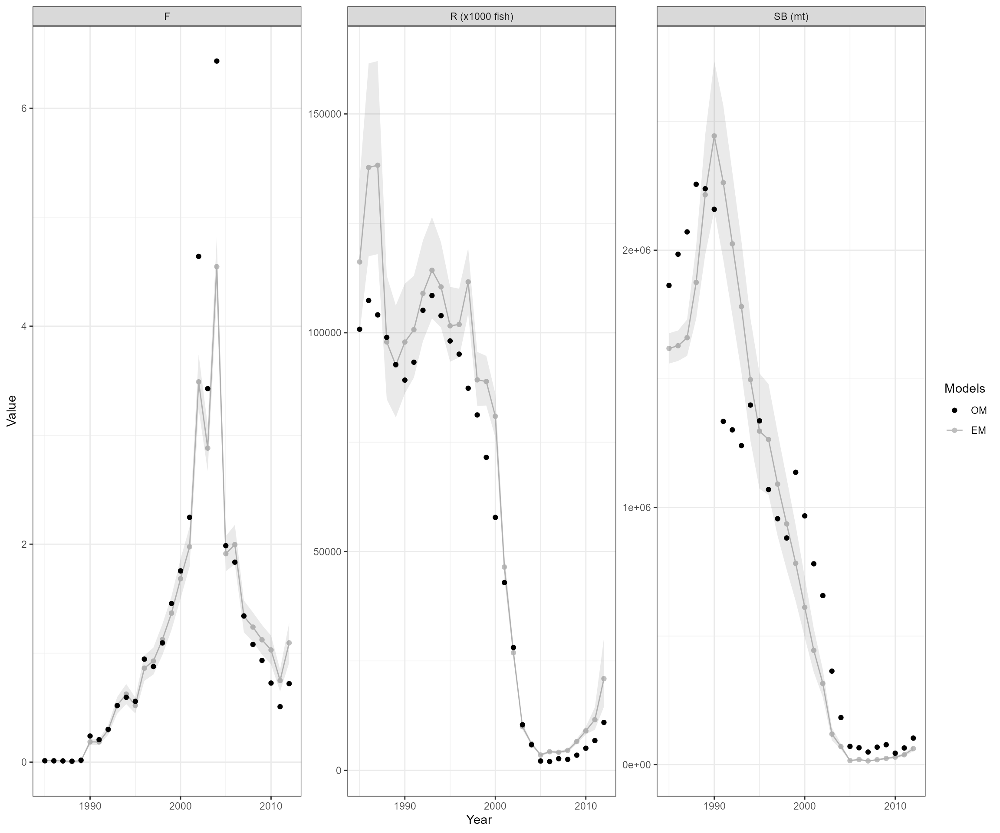
Projection

 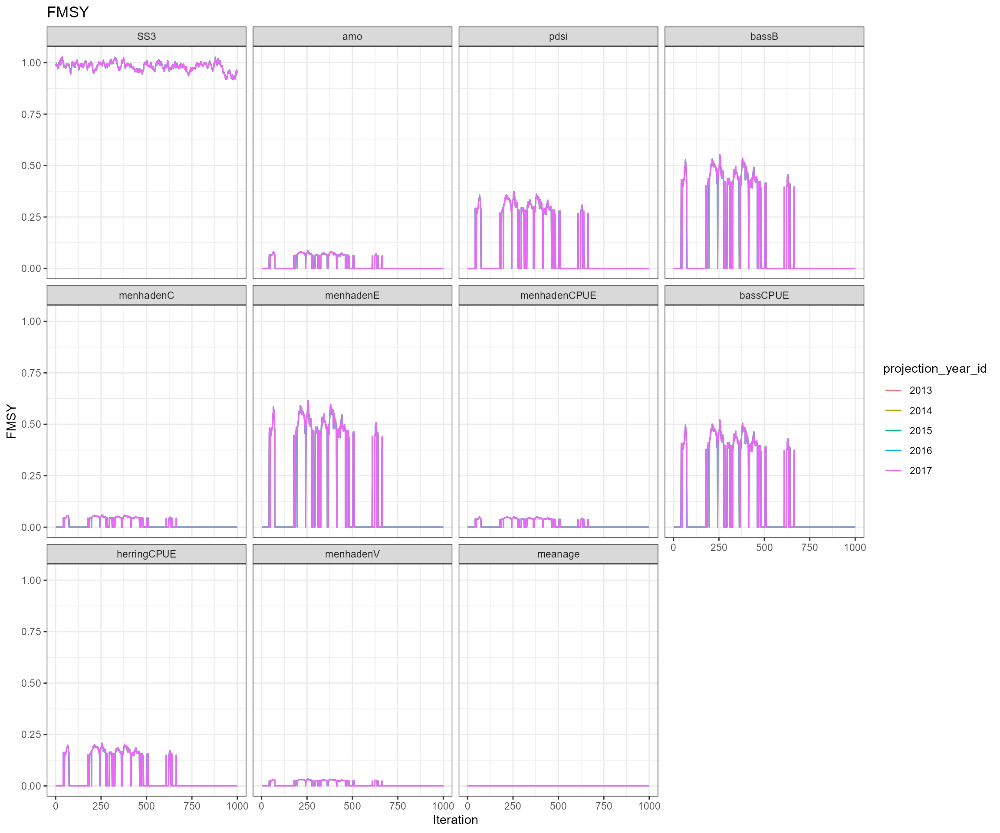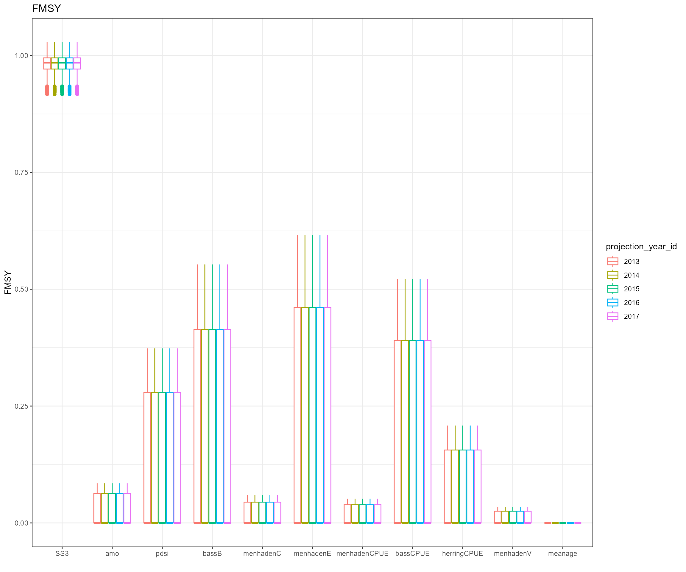
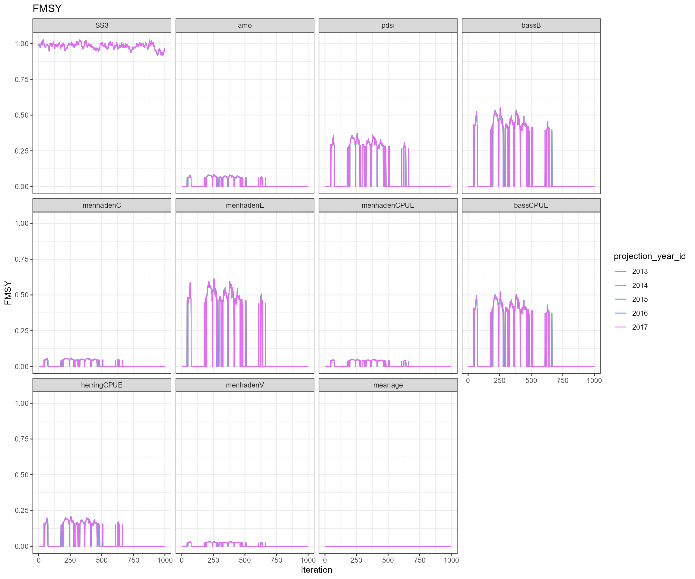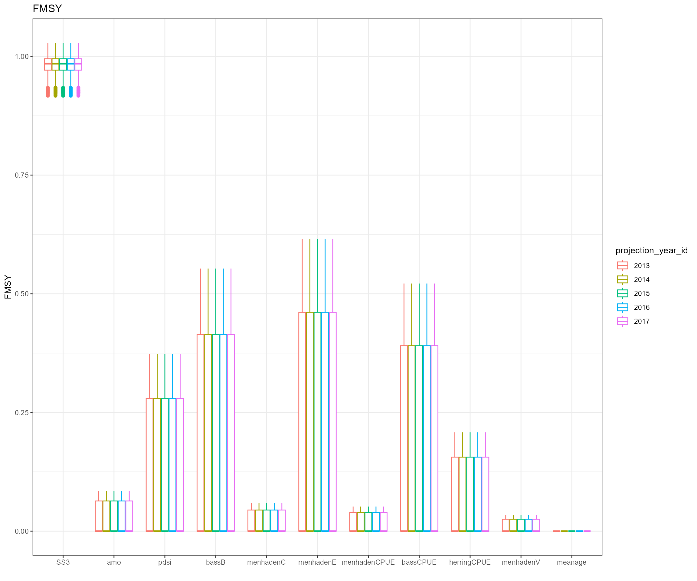
| case | projection_year | amo | pdsi | bassB | menhadenC | menhadenE | menhadenCPUE | bassCPUE | herringCPUE | menhadenV | meanage |
|---|---|---|---|---|---|---|---|---|---|---|---|
| PDSI+AMO1 Case | 1 | -4.04*~lm | -0.86lm | -1.51850982303557e-06lm | 1.33055998597195e-06lm | -0.03*lm | 0.000070981481488274*^~lm | -0.000366909334517523lm | -1.78057871610944e-06lm | 1.84202224601749e-09lm | 10.7*^~lm |
| PDSI+AMO1 Case | 2 | -4.04*~lm | -0.86lm | -1.51850982303557e-06lm | 1.33055998597195e-06lm | -0.03*lm | 0.000070981481488274*^~lm | -0.000366909334517523lm | -1.78057871610944e-06lm | 1.84202224601749e-09lm | 10.7*^~lm |
| PDSI+AMO1 Case | 3 | -4.04*~lm | -0.86lm | -1.51850982303557e-06lm | 1.33055998597195e-06lm | -0.03*lm | 0.000070981481488274*^~lm | -0.000366909334517523lm | -1.78057871610944e-06lm | 1.84202224601749e-09lm | 10.7*^~lm |
| PDSI+AMO1 Case | 4 | -4.04*~lm | -0.86lm | -1.51850982303557e-06lm | 1.33055998597195e-06lm | -0.03*lm | 0.000070981481488274*^~lm | -0.000366909334517523lm | -1.78057871610944e-06lm | 1.84202224601749e-09lm | 10.7*^~lm |
| PDSI+AMO1 Case | 5 | -4.04*~lm | -0.86lm | -1.51850982303557e-06lm | 1.33055998597195e-06lm | -0.03*lm | 0.000070981481488274*^~lm | -0.000366909334517523lm | -1.78057871610944e-06lm | 1.84202224601749e-09lm | 10.7*^~lm |
-
Projections based on \(F_{MSY}\)
- Projections from estimation model 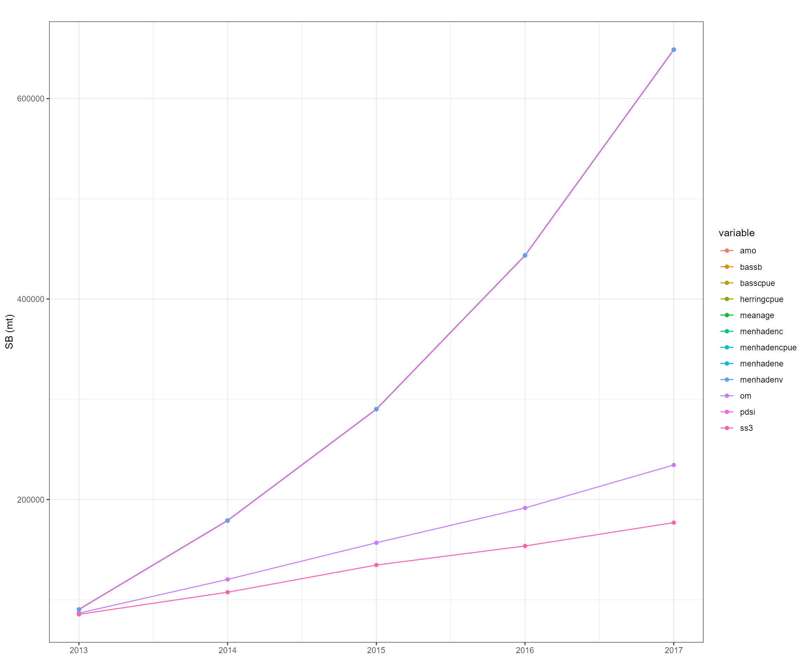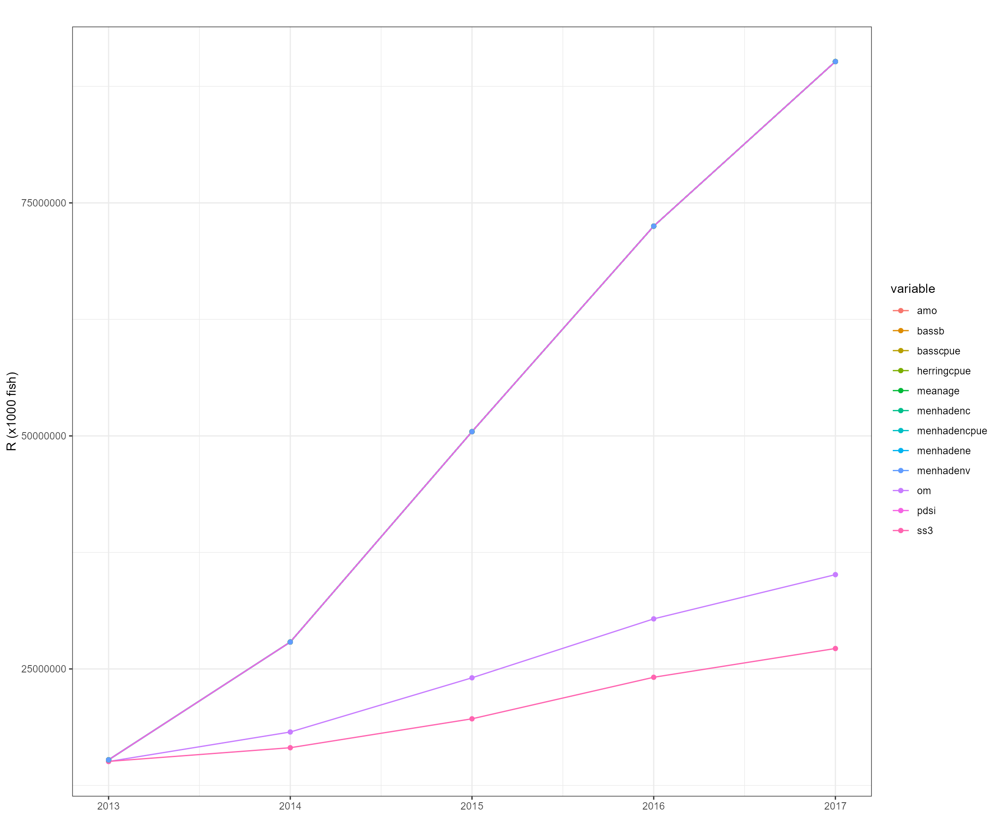
pdf 2
-
Projections from operating model


Average_Catch B_K B_BMSY Average_BiomassMax 295386 0.895 1.23e+06 3623074 Min 0 0.000 0.00e+00 0 OM+OM FMSY 204207 0.305 5.21e+05 570693 OM+DBSRA FMSY 222195 0.244 4.17e+05 500323 OM+AMO Fadj 0 0.717 1.23e+06 1051243 OM+PDSI Fadj 0 0.717 1.23e+06 1051243 OM+Bass Biomass Fadj 0 0.717 1.23e+06 1051243 OM+Menhaden Mean Age 0 0.717 1.23e+06 1051243 OM+Menhaden Catch Fadj 0 0.717 1.23e+06 1051243 OM+Menhaden Effort Fadj 0 0.717 1.23e+06 1051243 OM+Menhaden CPUE Fadj 0 0.717 1.23e+06 1051243 OM+Bass CPUE Fadj 0 0.717 1.23e+06 1051243 OM+Herring CPUE Fadj 0 0.717 1.23e+06 1051243 OM+Menhaden Value Fadj 0 0.717 1.23e+06 1051243 SS3 EM+SS3 FMSY 295386 0.559 5.06e-01 2635864 SS3 EM+AMO Fadj 0 0.895 2.05e+00 3623074 SS3 EM+PDSI Fadj 0 0.895 2.05e+00 3623074 SS3 EM+Bass Biomass Fadj 0 0.895 2.05e+00 3623074 SS3 EM+Menhaden Mean Age Fadj 0 0.895 2.05e+00 3623074 SS3 EM+Menhaden Catch Fadj 0 0.895 2.05e+00 3623074 SS3 EM+Menhaden Effort Fadj 0 0.895 2.05e+00 3623074 SS3 EM+Menhaden CPUE Fadj 0 0.895 2.05e+00 3623074 SS3 EM+Bass CPUE Fadj 0 0.895 2.05e+00 3623074 SS3 EM+Herring CPUE Fadj 0 0.895 2.05e+00 3623074 SS3 EM+Menhaden Value Fadj 0 0.895 2.05e+00 3623074 Bonanza_Period Collapse_Period Max 5 0 Min 0 5 OM+OM FMSY 0 2 OM+DBSRA FMSY 0 3 OM+AMO Fadj 0 1 OM+PDSI Fadj 0 1 OM+Bass Biomass Fadj 0 1 OM+Menhaden Mean Age 0 1 OM+Menhaden Catch Fadj 0 1 OM+Menhaden Effort Fadj 0 1 OM+Menhaden CPUE Fadj 0 1 OM+Bass CPUE Fadj 0 1 OM+Herring CPUE Fadj 0 1 OM+Menhaden Value Fadj 0 1 SS3 EM+SS3 FMSY 1 0 SS3 EM+AMO Fadj 1 0 SS3 EM+PDSI Fadj 1 0 SS3 EM+Bass Biomass Fadj 1 0 SS3 EM+Menhaden Mean Age Fadj 1 0 SS3 EM+Menhaden Catch Fadj 1 0 SS3 EM+Menhaden Effort Fadj 1 0 SS3 EM+Menhaden CPUE Fadj 1 0 SS3 EM+Bass CPUE Fadj 1 0 SS3 EM+Herring CPUE Fadj 1 0 SS3 EM+Menhaden Value Fadj 1 0 pdf
EwE with environmental effects and without fleet dynamics
Case 0: stock assessment base run
[1] TRUE TempFile Size “size of file gradfil1.tmp = 0” “size of file
gradfil2.tmp = 0”
$SS_versionshort [1] “3.30”
$SS_versionNumeric [1] 3.3
$StartTime [1] “StartTime: Thu Jun 20 11:28:26 2024”
$RunTime [1] “0 hours, 0 minutes, 6 seconds.”
$Files_used [1] “Data_File: data.ss Control_File: control.ss”
$Nwarnings [1] 1
$warnings [1] “1 Final gradient: 0.00135045 is larger than final_conv: 0.0001” [2] “N warnings: 1”
$likelihoods_used values lambdas TOTAL 1070.1600000 NA Catch 0.0079803 NA Equil_catch 0.0000000 NA Survey 384.3830000 NA Age_comp 675.7350000 NA Recruitment 9.9508500 1.0 InitEQ_Regime 0.0000000 1.0 Forecast_Recruitment 0.0000000 1.0 Parm_priors 0.0000000 1.0 Parm_softbounds 0.0007564 NA Parm_devs 0.0000000 1.0 F_Ballpark 0.0817631 1.0 F_Ballpark(info_only)_2012_estF_tgtF 0.4495140 0.3 Crash_Pen 0.0000000 1.0
$likelihoods_laplace values lambdas NoBias_corr_Recruitment(info_only) 9.951 1 Laplace_obj_fun(info_only) 1070.160 NA
$likelihoods_by_fleet Label ALL fleet1 survey1 survey2 181 Catch_lambda NA 1.000e+00 1.0 1.0 182 Catch_like 0.00798 7.980e-03 0.0 0.0 183 Init_equ_lambda NA 0.000e+00 1.0 1.0 184 Init_equ_like 0.00000 3.473e+04 0.0 0.0 185 Surv_lambda NA 0.000e+00 1.0 1.0 186 Surv_like 384.38300 0.000e+00 165.1 219.3 187 Surv_N_use NA 0.000e+00 23.0 28.0 188 Surv_N_skip NA 0.000e+00 0.0 0.0 189 Age_lambda NA 1.000e+00 1.0 1.0 190 Age_like 675.73500 1.704e+02 221.5 283.8 191 Age_N_use NA 2.800e+01 23.0 28.0 192 Age_N_skip NA 0.000e+00 0.0 0.0
$N_estimated_parameters [1] 48
$table_of_phases
-99 -5 -4 -3 -2 -1 1 2 3 1 1 2 11 8 3 3 40 5
$estimated_non_dev_parameters Value Phase Min Max Init Status Parm_StDev SR_LN(R0) 10.7499 1 3 31 15.000 OK 0.01805 LnQ_base_survey1(2) 8.4608 1 -10 10 6.646 OK 0.05251 LnQ_base_survey2(3) 6.2611 1 -10 10 5.670 OK 0.03430 AgeSel_P2_fleet1(1) 2.7139 2 -10 10 0.810 OK 0.04082 AgeSel_P3_fleet1(1) 1.7075 2 -10 10 1.640 OK 0.03619 AgeSel_P4_fleet1(1) -0.5086 2 -10 10 -0.560 OK 0.06931 AgeSel_P5_fleet1(1) -0.6913 2 -10 10 0.610 OK 0.16753 AgeSel_P6_fleet1(1) -1.3378 2 -10 10 -0.680 OK 0.60977 AgeSel_P7_fleet1(1) 0.8077 2 -10 10 0.360 OK 0.65169 AgeSel_P1_survey1(2) 2.1345 2 0 6 2.300 OK 0.07021 AgeSel_P2_survey1(2) 4.7790 2 0 12 4.300 OK 0.11071 AgeSel_P4_survey1(2) 3.3894 2 0 12 3.500 OK 0.28405 AgeSel_P1_survey2(3) 2.3700 2 0 6 2.300 OK 0.10362 AgeSel_P2_survey2(3) 4.5051 2 0 12 4.300 OK 0.09043 AgeSel_P4_survey2(3) 3.6243 2 0 12 3.500 OK 0.46006 Gradient Pr_type Prior Pr_SD Pr_Like Afterbound SR_LN(R0) 0.0048763300 No_prior NA NA NA OK LnQ_base_survey1(2) -0.0000025270 No_prior NA NA NA OK LnQ_base_survey2(3) -0.0000025427 No_prior NA NA NA OK AgeSel_P2_fleet1(1) -0.0000192366 No_prior NA NA NA OK AgeSel_P3_fleet1(1) 0.0005959400 No_prior NA NA NA OK AgeSel_P4_fleet1(1) 0.0003601340 No_prior NA NA NA OK AgeSel_P5_fleet1(1) 0.0001977060 No_prior NA NA NA OK AgeSel_P6_fleet1(1) 0.0000960981 No_prior NA NA NA OK AgeSel_P7_fleet1(1) 0.0000758810 No_prior NA NA NA OK AgeSel_P1_survey1(2) 0.0000006902 No_prior NA NA NA OK AgeSel_P2_survey1(2) -0.0000039544 No_prior NA NA NA OK AgeSel_P4_survey1(2) -0.0000009533 No_prior NA NA NA OK AgeSel_P1_survey2(3) 0.0000030463 No_prior NA NA NA OK AgeSel_P2_survey2(3) -0.0000031620 No_prior NA NA NA OK AgeSel_P4_survey2(3) -0.0000018578 No_prior NA NA NA OK
$log_det_hessian [1] 261.3
$maximum_gradient_component [1] 0.00135
$parameters_with_highest_gradients Value Gradient SR_LN(R0) 10.7499 0.0048763 AgeSel_P3_fleet1(1) 1.7075 0.0005959 Main_RecrDev_1997 1.3137 0.0003741 AgeSel_P4_fleet1(1) -0.5086 0.0003601 Main_RecrDev_1996 1.5362 0.0003491
$Age_Comp_Fit_Summary Factor Fleet Recommend_var_adj # Nsamp_adj Npos min_Nsamp max_Nsamp 1211 5 1 0.18315 # 28 28 200 200 1212 5 2 0.07813 # 23 23 200 200 1213 5 3 0.05637 # 28 28 200 200 mean_Nsamp_in mean_Nsamp_adj mean_Nsamp_DM DM_theta mean_effN HarMean_effN 1211 200 200 NA NA 236.97 36.63 1212 200 200 NA NA 61.16 15.63 1213 200 200 NA NA 72.65 11.27 Curr_Var_Adj Fleet_name 1211 1 fleet1 1212 1 survey1 1213 1 survey2
$SBzero [1] 593080
$current_depletion [1] 0.2625
$last_years_SPR [1] 0.2887
$SPRratioLabel [1] “(1-SPR)/(1-SPR_40%)”
$sigma_R_in [1] 0.99
$sigma_R_info period N_devs SD_of_devs Var_of_devs mean_SE mean_SEsquared 1 Main 28 0.8619 0.7429 0.06264 0.00471 2 Early+Main 28 0.8619 0.7429 0.06264 0.00471 3 Early+Main+Late 28 0.8619 0.7429 0.06264 0.00471 sqrt_sum_of_components SD_of_devs_over_sigma_R sqrt_sum_over_sigma_R 1 0.8646 0.8706 0.8734 2 0.8646 0.8706 0.8734 3 0.8646 0.8706 0.8734 alternative_sigma_R 1 0.8646 2 0.8646 3 0.8646
$rmse_table ERA N RMSE RMSE_over_sigmaR mean_BiasAdj 1 main 28 0.8464 0.7309 1 2 early 0 0.0000 0.0000 0
$cormessage1 [1] Range of abs(parameter correlations) is 0.0000846533 to 0.986978
$cormessage2 [1] 1 correlation above threshold (cormax=0.95)
$cormessage3 label.i label.j corr 1 AgeSel_P4_survey2(3) AgeSel_P1_survey2(3) 0.987
$cormessage7 [1] No uncorrelated parameters below threshold (cormin=0.01)
FMSY: 1.027 TempFile Size “size of file gradfil1.tmp = 0” “size of
file gradfil2.tmp = 0”
$SS_versionshort [1] “3.30”
$SS_versionNumeric [1] 3.3
$StartTime [1] “StartTime: Thu Jun 20 11:28:34 2024”
$RunTime [1] “0 hours, 0 minutes, 6 seconds.”
$Files_used [1] “Data_File: data.ss Control_File: control.ss”
$Nwarnings [1] 1
$warnings [1] “1 Final gradient: 0.00256187 is larger than final_conv: 0.0001” [2] “N warnings: 1”
$likelihoods_used values lambdas TOTAL 1.109e+03 NA Catch 9.867e-03 NA Equil_catch 0.000e+00 NA Survey 4.143e+02 NA Age_comp 6.852e+02 NA Recruitment 9.316e+00 1.0 InitEQ_Regime 1.745e-33 1.0 Forecast_Recruitment 0.000e+00 1.0 Parm_priors 0.000e+00 1.0 Parm_softbounds 7.456e-04 NA Parm_devs 0.000e+00 1.0 F_Ballpark 9.843e-02 1.0 F_Ballpark(info_only)_2012_estF_tgtF 4.675e-01 0.3 Crash_Pen 0.000e+00 1.0
$likelihoods_laplace values lambdas NoBias_corr_Recruitment(info_only) 9.316 1 Laplace_obj_fun(info_only) 1108.900 NA
$likelihoods_by_fleet Label ALL fleet1 survey1 survey2 181 Catch_lambda NA 1.000e+00 1.0 1.0 182 Catch_like 0.009867 9.867e-03 0.0 0.0 183 Init_equ_lambda NA 0.000e+00 1.0 1.0 184 Init_equ_like 0.000000 3.404e+04 0.0 0.0 185 Surv_lambda NA 0.000e+00 1.0 1.0 186 Surv_like 414.280000 0.000e+00 166.5 247.8 187 Surv_N_use NA 0.000e+00 23.0 28.0 188 Surv_N_skip NA 0.000e+00 0.0 0.0 189 Age_lambda NA 1.000e+00 1.0 1.0 190 Age_like 685.191000 1.751e+02 223.1 287.0 191 Age_N_use NA 2.800e+01 23.0 28.0 192 Age_N_skip NA 0.000e+00 0.0 0.0
$N_estimated_parameters [1] 48
$table_of_phases
-99 -5 -4 -3 -2 -1 1 2 3 1 1 2 11 8 3 3 40 5
$estimated_non_dev_parameters Value Phase Min Max Init Status Parm_StDev SR_LN(R0) 10.6108 1 3 31 15.000 OK 0.01794 LnQ_base_survey1(2) 8.4998 1 -10 10 6.646 OK 0.05332 LnQ_base_survey2(3) 6.2957 1 -10 10 5.670 OK 0.03448 AgeSel_P2_fleet1(1) 2.7184 2 -10 10 0.810 OK 0.04080 AgeSel_P3_fleet1(1) 1.7192 2 -10 10 1.640 OK 0.03628 AgeSel_P4_fleet1(1) -0.4951 2 -10 10 -0.560 OK 0.06930 AgeSel_P5_fleet1(1) -0.6730 2 -10 10 0.610 OK 0.16792 AgeSel_P6_fleet1(1) -1.3277 2 -10 10 -0.680 OK 0.61168 AgeSel_P7_fleet1(1) 0.8137 2 -10 10 0.360 OK 0.65498 AgeSel_P1_survey1(2) 2.1491 2 0 6 2.300 OK 0.07228 AgeSel_P2_survey1(2) 4.7821 2 0 12 4.300 OK 0.10976 AgeSel_P4_survey1(2) 3.4219 2 0 12 3.500 OK 0.29715 AgeSel_P1_survey2(3) 2.3780 2 0 6 2.300 OK 0.10533 AgeSel_P2_survey2(3) 4.5135 2 0 12 4.300 OK 0.09029 AgeSel_P4_survey2(3) 3.6248 2 0 12 3.500 OK 0.47062 Gradient Pr_type Prior Pr_SD Pr_Like Afterbound SR_LN(R0) 0.0025639300 No_prior NA NA NA OK LnQ_base_survey1(2) -0.0000217515 No_prior NA NA NA OK LnQ_base_survey2(3) -0.0000270049 No_prior NA NA NA OK AgeSel_P2_fleet1(1) -0.0000164253 No_prior NA NA NA OK AgeSel_P3_fleet1(1) 0.0003364340 No_prior NA NA NA OK AgeSel_P4_fleet1(1) 0.0002142090 No_prior NA NA NA OK AgeSel_P5_fleet1(1) 0.0001075140 No_prior NA NA NA OK AgeSel_P6_fleet1(1) 0.0000566348 No_prior NA NA NA OK AgeSel_P7_fleet1(1) 0.0000455749 No_prior NA NA NA OK AgeSel_P1_survey1(2) 0.0000521810 No_prior NA NA NA OK AgeSel_P2_survey1(2) 0.0000454054 No_prior NA NA NA OK AgeSel_P4_survey1(2) -0.0000111555 No_prior NA NA NA OK AgeSel_P1_survey2(3) 0.0000013973 No_prior NA NA NA OK AgeSel_P2_survey2(3) 0.0000091900 No_prior NA NA NA OK AgeSel_P4_survey2(3) 0.0000007297 No_prior NA NA NA OK
$log_det_hessian [1] 263.2
$maximum_gradient_component [1] 0.002562
$parameters_with_highest_gradients Value Gradient SR_LN(R0) 10.6108 0.0025639 AgeSel_P3_fleet1(1) 1.7192 0.0003364 AgeSel_P4_fleet1(1) -0.4951 0.0002142 Main_RecrDev_1996 1.5436 0.0001877 Main_RecrDev_1997 1.3251 0.0001874
$Age_Comp_Fit_Summary Factor Fleet Recommend_var_adj # Nsamp_adj Npos min_Nsamp max_Nsamp 1211 5 1 0.17760 # 28 28 200 200 1212 5 2 0.07777 # 23 23 200 200 1213 5 3 0.05567 # 28 28 200 200 mean_Nsamp_in mean_Nsamp_adj mean_Nsamp_DM DM_theta mean_effN HarMean_effN 1211 200 200 NA NA 228.94 35.52 1212 200 200 NA NA 58.62 15.55 1213 200 200 NA NA 70.50 11.13 Curr_Var_Adj Fleet_name 1211 1 fleet1 1212 1 survey1 1213 1 survey2
$SBzero [1] 516050
$current_depletion [1] 0.289
$last_years_SPR [1] 0.1942
$SPRratioLabel [1] “(1-SPR)/(1-SPR_40%)”
$sigma_R_in [1] 0.8646
$sigma_R_info period N_devs SD_of_devs Var_of_devs mean_SE mean_SEsquared 1 Main 28 0.861 0.7414 0.06183 0.004584 2 Early+Main 28 0.861 0.7414 0.06183 0.004584 3 Early+Main+Late 28 0.861 0.7414 0.06183 0.004584 sqrt_sum_of_components SD_of_devs_over_sigma_R sqrt_sum_over_sigma_R 1 0.8637 0.9959 0.9989 2 0.8637 0.9959 0.9989 3 0.8637 0.9959 0.9989 alternative_sigma_R 1 0.8637 2 0.8637 3 0.8637
$rmse_table ERA N RMSE RMSE_over_sigmaR mean_BiasAdj 1 main 28 0.8455 0.9563 1 2 early 0 0.0000 0.0000 0
$cormessage1 [1] Range of abs(parameter correlations) is 0.000187652 to 0.987401
$cormessage2 [1] 1 correlation above threshold (cormax=0.95)
$cormessage3 label.i label.j corr 1 AgeSel_P4_survey2(3) AgeSel_P1_survey2(3) 0.9874
$cormessage7 [1] No uncorrelated parameters below threshold (cormin=0.01)
Running ‘SS_html’: By default, this function will look in the directory where PNG files were created for CSV files with the name ‘plotInfoTable…’ written by ‘SS_plots.’ HTML files are written to link to these plots and put in the same directory.
Removing duplicate rows in combined plotInfoTable based on multiple CSV files Home HTML file with output will be: C:/Users/bai.li/Documents/GitHub/IP4EBFM_Project/IP4EBFM/data/data_rich/ecosim_forcing_pdsi_egg_amo1/2012/plots/_SS_output.html Opening HTML file in your default web-browser.
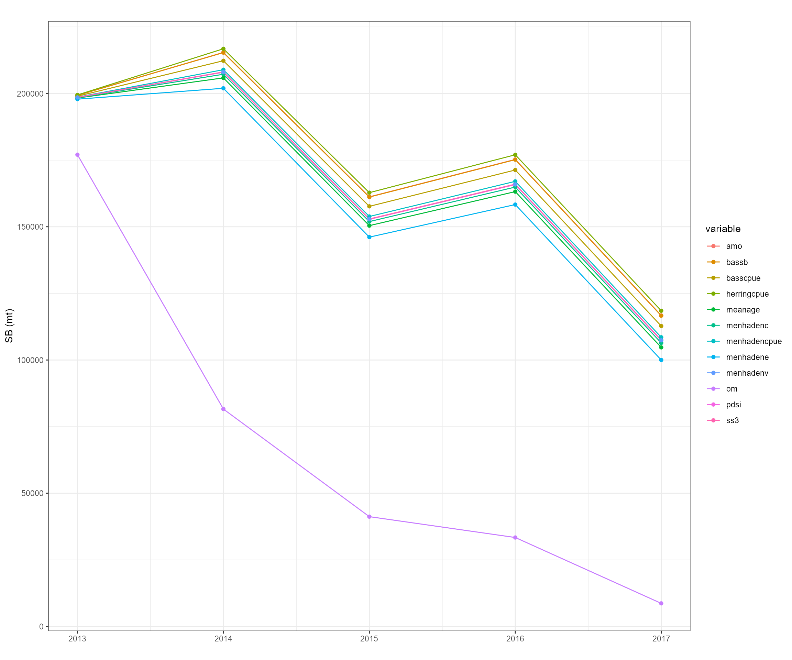
Projection
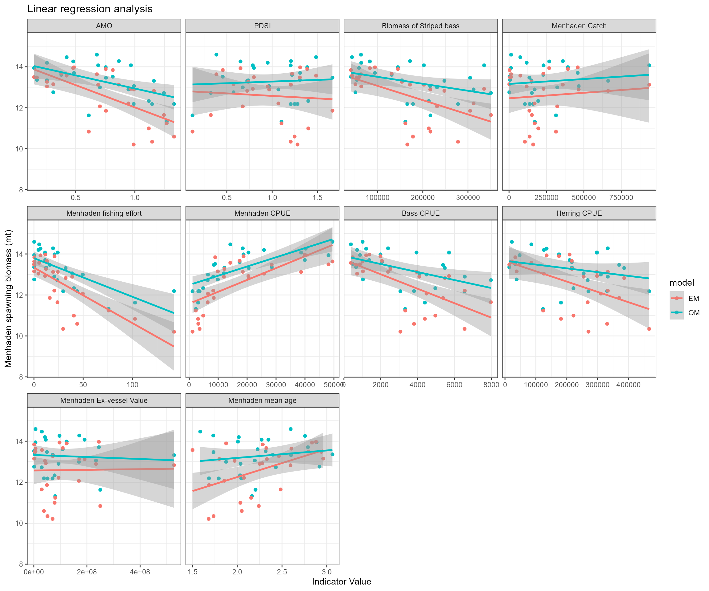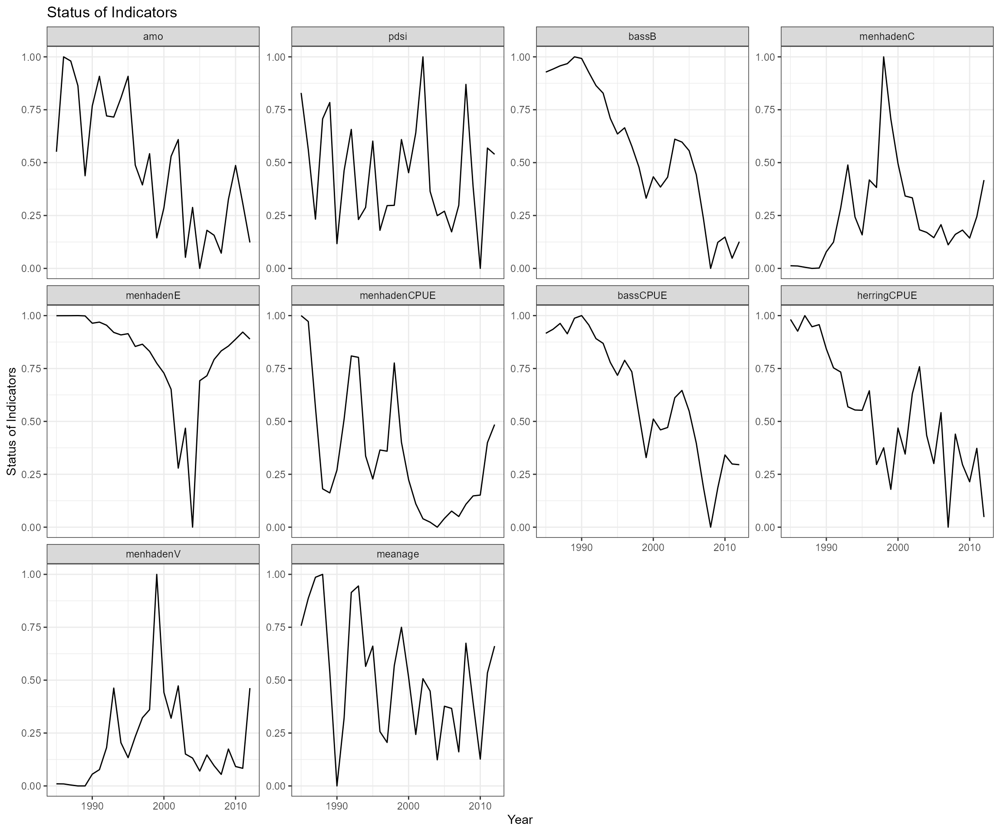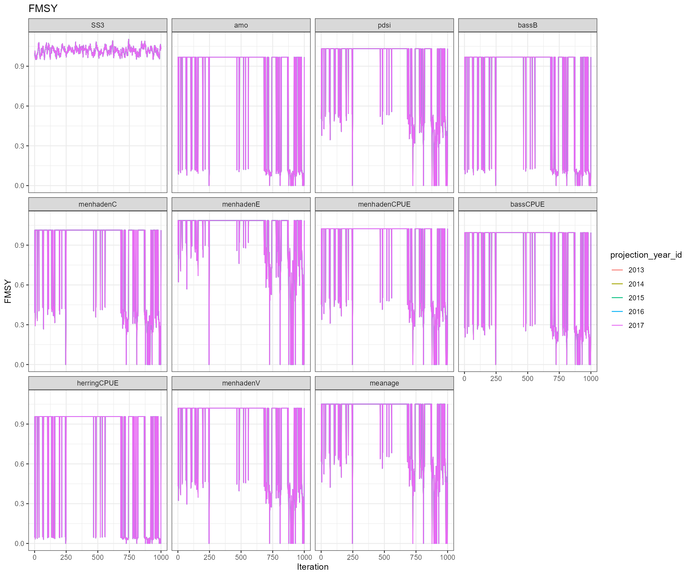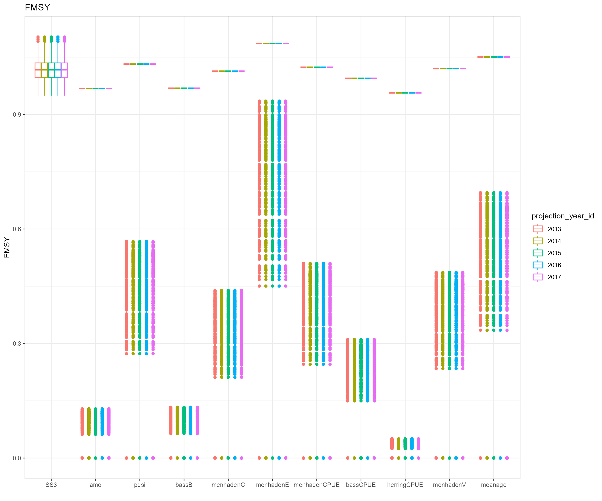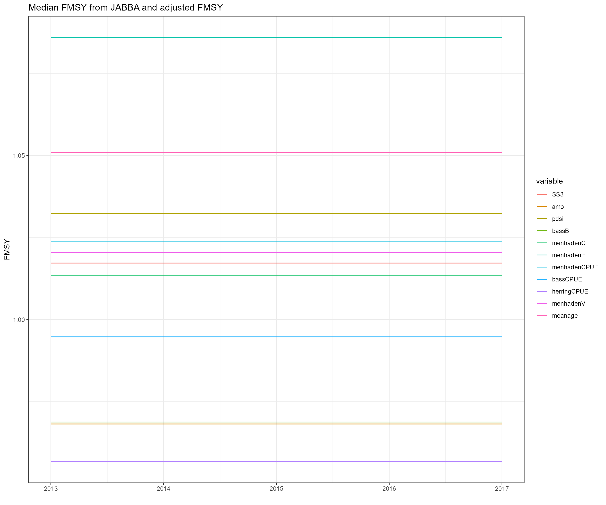
| case | projection_year | amo | pdsi | bassB | menhadenC | menhadenE | menhadenCPUE | bassCPUE | herringCPUE | menhadenV | meanage |
|---|---|---|---|---|---|---|---|---|---|---|---|
| PDSI+AMO1 Case | 1 | -2.17*~lm | -0.25lm | -6.96705403745111e-06*lm | 5.38476091327393e-07lm | -0.03*lm | 0.0000577924473817884*~lm | -0.000352572475109435*lm | -5.03974878525203e-06*lm | 1.65483541582176e-10lm | 1.36*~lm |
| PDSI+AMO1 Case | 2 | -2.17*~lm | -0.25lm | -6.96705403745111e-06*lm | 5.38476091327393e-07lm | -0.03*lm | 0.0000577924473817884*~lm | -0.000352572475109435*lm | -5.03974878525203e-06*lm | 1.65483541582176e-10lm | 1.36*~lm |
| PDSI+AMO1 Case | 3 | -2.17*~lm | -0.25lm | -6.96705403745111e-06*lm | 5.38476091327393e-07lm | -0.03*lm | 0.0000577924473817884*~lm | -0.000352572475109435*lm | -5.03974878525203e-06*lm | 1.65483541582176e-10lm | 1.36*~lm |
| PDSI+AMO1 Case | 4 | -2.17*~lm | -0.25lm | -6.96705403745111e-06*lm | 5.38476091327393e-07lm | -0.03*lm | 0.0000577924473817884*~lm | -0.000352572475109435*lm | -5.03974878525203e-06*lm | 1.65483541582176e-10lm | 1.36*~lm |
| PDSI+AMO1 Case | 5 | -2.17*~lm | -0.25lm | -6.96705403745111e-06*lm | 5.38476091327393e-07lm | -0.03*lm | 0.0000577924473817884*~lm | -0.000352572475109435*lm | -5.03974878525203e-06*lm | 1.65483541582176e-10lm | 1.36*~lm |
-
Projections based on \(F_{MSY}\)
- Projections from estimation model


- Projections from estimation model
pdf 2
-
Projections from operating model


Average_Catch B_K B_BMSY Average_BiomassMax 330772 0.3807 1.91e+05 2138964 Min 0 0.0000 0.00e+00 0 OM+OM FMSY 218660 0.1117 1.91e+05 582406 OM+DBSRA FMSY 253132 0.0876 1.50e+05 523167 OM+AMO Fadj 245989 0.0946 1.62e+05 540906 OM+PDSI Fadj 253168 0.0875 1.50e+05 523010 OM+Bass Biomass Fadj 246060 0.0945 1.61e+05 540735 OM+Menhaden Mean Age 255116 0.0856 1.46e+05 517949 OM+Menhaden Catch Fadj 251149 0.0895 1.53e+05 528158 OM+Menhaden Effort Fadj 258610 0.0820 1.40e+05 508623 OM+Menhaden CPUE Fadj 252274 0.0884 1.51e+05 525301 OM+Bass CPUE Fadj 249059 0.0916 1.57e+05 533392 OM+Herring CPUE Fadj 244618 0.0959 1.64e+05 544200 OM+Menhaden Value Fadj 218660 0.1117 1.91e+05 582406 SS3 EM+SS3 FMSY 318683 0.3714 4.44e-01 2108978 SS3 EM+AMO Fadj 311895 0.3791 4.75e-01 2133868 SS3 EM+PDSI Fadj 318683 0.3714 4.44e-01 2108978 SS3 EM+Bass Biomass Fadj 313295 0.3775 4.68e-01 2128810 SS3 EM+Menhaden Mean Age Fadj 318683 0.3714 4.44e-01 2108978 SS3 EM+Menhaden Catch Fadj 330772 0.3568 3.91e-01 2061948 SS3 EM+Menhaden Effort Fadj 318683 0.3714 4.44e-01 2108978 SS3 EM+Menhaden CPUE Fadj 316031 0.3745 4.56e-01 2118818 SS3 EM+Bass CPUE Fadj 310472 0.3807 4.81e-01 2138964 SS3 EM+Herring CPUE Fadj 318683 0.3714 4.44e-01 2108978 SS3 EM+Menhaden Value Fadj 318683 0.3714 4.44e-01 2108978 Bonanza_Period Collapse_Period Max 5 0 Min 0 5 OM+OM FMSY 0 1 OM+DBSRA FMSY 0 3 OM+AMO Fadj 0 3 OM+PDSI Fadj 0 3 OM+Bass Biomass Fadj 0 3 OM+Menhaden Mean Age 0 3 OM+Menhaden Catch Fadj 0 3 OM+Menhaden Effort Fadj 0 3 OM+Menhaden CPUE Fadj 0 3 OM+Bass CPUE Fadj 0 3 OM+Herring CPUE Fadj 0 3 OM+Menhaden Value Fadj 0 1 SS3 EM+SS3 FMSY 1 0 SS3 EM+AMO Fadj 1 0 SS3 EM+PDSI Fadj 1 0 SS3 EM+Bass Biomass Fadj 1 0 SS3 EM+Menhaden Mean Age Fadj 1 0 SS3 EM+Menhaden Catch Fadj 1 0 SS3 EM+Menhaden Effort Fadj 1 0 SS3 EM+Menhaden CPUE Fadj 1 0 SS3 EM+Bass CPUE Fadj 1 0 SS3 EM+Herring CPUE Fadj 1 0 SS3 EM+Menhaden Value Fadj 1 0 pdf
EwE with environmental effects and fleet dynamics
Year 2012 Assessment with low CV in data and without environmental link in the estimation model
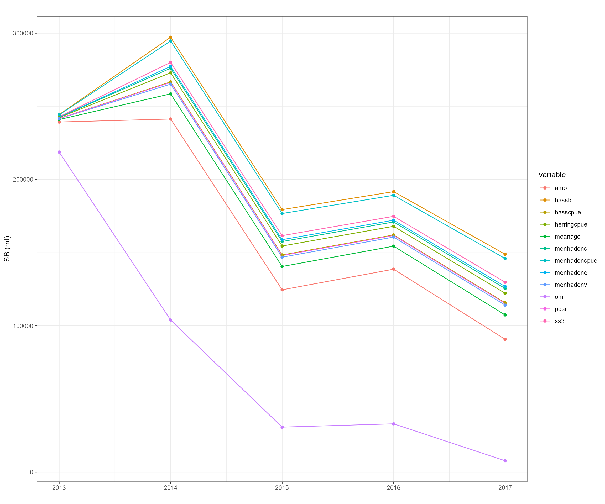
Case 0: stock assessment base run
[1] TRUE TempFile Size “size of file gradfil1.tmp = 0” “size of file
gradfil2.tmp = 0”
$SS_versionshort [1] “3.30”
$SS_versionNumeric [1] 3.3
$StartTime [1] “StartTime: Thu Jun 20 12:11:49 2024”
$RunTime [1] “0 hours, 0 minutes, 7 seconds.”
$Files_used [1] “Data_File: data.ss Control_File: control.ss”
$Nwarnings [1] 0
$warnings [1] “N warnings: 0”
$likelihoods_used values lambdas TOTAL 644.6470000 NA Catch 0.0004228 NA Equil_catch 0.0000000 NA Survey 115.8170000 NA Age_comp 513.0480000 NA Recruitment 15.6883000 1.0 InitEQ_Regime 0.0000000 1.0 Forecast_Recruitment 0.0000000 1.0 Parm_priors 0.0000000 1.0 Parm_softbounds 0.0009067 NA Parm_devs 0.0000000 1.0 F_Ballpark 0.0919999 1.0 F_Ballpark(info_only)_2012_estF_tgtF 0.4606950 0.3 Crash_Pen 0.0000000 1.0
$likelihoods_laplace values lambdas NoBias_corr_Recruitment(info_only) 15.69 1 Laplace_obj_fun(info_only) 644.65 NA
$likelihoods_by_fleet Label ALL fleet1 survey1 survey2 181 Catch_lambda NA 1.000e+00 1.00 1.00 182 Catch_like 4.228e-04 4.228e-04 0.00 0.00 183 Init_equ_lambda NA 0.000e+00 1.00 1.00 184 Init_equ_like 0.000e+00 3.919e+04 0.00 0.00 185 Surv_lambda NA 0.000e+00 1.00 1.00 186 Surv_like 1.158e+02 0.000e+00 70.93 44.89 187 Surv_N_use NA 0.000e+00 23.00 28.00 188 Surv_N_skip NA 0.000e+00 0.00 0.00 189 Age_lambda NA 1.000e+00 1.00 1.00 190 Age_like 5.130e+02 9.771e+01 212.87 202.47 191 Age_N_use NA 2.800e+01 23.00 28.00 192 Age_N_skip NA 0.000e+00 0.00 0.00
$N_estimated_parameters [1] 48
$table_of_phases
-99 -5 -4 -3 -2 -1 1 2 3 1 1 2 11 8 3 3 40 5
$estimated_non_dev_parameters Value Phase Min Max Init Status Parm_StDev SR_LN(R0) 11.2349 1 3 31 15.000 OK 0.04923 LnQ_base_survey1(2) 8.3773 1 -10 10 6.646 OK 0.06728 LnQ_base_survey2(3) 6.5677 1 -10 10 5.670 OK 0.05851 AgeSel_P2_fleet1(1) 0.7986 2 -10 10 0.810 OK 0.03890 AgeSel_P3_fleet1(1) 1.6884 2 -10 10 1.640 OK 0.04233 AgeSel_P4_fleet1(1) -0.5292 2 -10 10 -0.560 OK 0.07260 AgeSel_P5_fleet1(1) 0.6423 2 -10 10 0.610 OK 0.09992 AgeSel_P6_fleet1(1) -0.6637 2 -10 10 -0.680 OK 0.18668 AgeSel_P7_fleet1(1) 0.4288 2 -10 10 0.360 OK 0.26050 AgeSel_P1_survey1(2) 1.9442 2 0 6 2.300 OK 0.05172 AgeSel_P2_survey1(2) 4.8113 2 0 12 4.300 OK 0.13440 AgeSel_P4_survey1(2) 2.5591 2 0 12 3.500 OK 0.15821 AgeSel_P1_survey2(3) 2.3092 2 0 6 2.300 OK 0.06661 AgeSel_P2_survey2(3) 4.6430 2 0 12 4.300 OK 0.07546 AgeSel_P4_survey2(3) 3.5617 2 0 12 3.500 OK 0.29713 Gradient Pr_type Prior Pr_SD Pr_Like Afterbound SR_LN(R0) 0.0000773235 No_prior NA NA NA OK LnQ_base_survey1(2) 0.0000085614 No_prior NA NA NA OK LnQ_base_survey2(3) -0.0000399637 No_prior NA NA NA OK AgeSel_P2_fleet1(1) -0.0000058153 No_prior NA NA NA OK AgeSel_P3_fleet1(1) 0.0000276408 No_prior NA NA NA OK AgeSel_P4_fleet1(1) 0.0000233273 No_prior NA NA NA OK AgeSel_P5_fleet1(1) 0.0000190152 No_prior NA NA NA OK AgeSel_P6_fleet1(1) 0.0000173515 No_prior NA NA NA OK AgeSel_P7_fleet1(1) 0.0000088990 No_prior NA NA NA OK AgeSel_P1_survey1(2) 0.0000168421 No_prior NA NA NA OK AgeSel_P2_survey1(2) 0.0000055356 No_prior NA NA NA OK AgeSel_P4_survey1(2) -0.0000056416 No_prior NA NA NA OK AgeSel_P1_survey2(3) -0.0000000919 No_prior NA NA NA OK AgeSel_P2_survey2(3) -0.0000020215 No_prior NA NA NA OK AgeSel_P4_survey2(3) -0.0000009997 No_prior NA NA NA OK
$log_det_hessian [1] 251.7
$maximum_gradient_component [1] 0.00007732
$parameters_with_highest_gradients Value Gradient SR_LN(R0) 11.2349 0.00007732 LnQ_base_survey2(3) 6.5677 -0.00003996 AgeSel_P3_fleet1(1) 1.6884 0.00002764 AgeSel_P4_fleet1(1) -0.5292 0.00002333 AgeSel_P5_fleet1(1) 0.6423 0.00001902
$Age_Comp_Fit_Summary Factor Fleet Recommend_var_adj # Nsamp_adj Npos min_Nsamp max_Nsamp 1211 5 1 0.4798 # 28 28 200 200 1212 5 2 0.0857 # 23 23 200 200 1213 5 3 0.1178 # 28 28 200 200 mean_Nsamp_in mean_Nsamp_adj mean_Nsamp_DM DM_theta mean_effN HarMean_effN 1211 200 200 NA NA 208.5 95.96 1212 200 200 NA NA 167.9 17.14 1213 200 200 NA NA 518.6 23.55 Curr_Var_Adj Fleet_name 1211 1 fleet1 1212 1 survey1 1213 1 survey2
$SBzero [1] 949360
$current_depletion [1] 0.2811
$last_years_SPR [1] 0.2607
$SPRratioLabel [1] “(1-SPR)/(1-SPR_40%)”
$sigma_R_in [1] 0.99
$sigma_R_info period N_devs SD_of_devs Var_of_devs mean_SE mean_SEsquared 1 Main 28 1.077 1.159 0.06156 0.004252 2 Early+Main 28 1.077 1.159 0.06156 0.004252 3 Early+Main+Late 28 1.077 1.159 0.06156 0.004252 sqrt_sum_of_components SD_of_devs_over_sigma_R sqrt_sum_over_sigma_R 1 1.079 1.088 1.09 2 1.079 1.088 1.09 3 1.079 1.088 1.09 alternative_sigma_R 1 1.079 2 1.079 3 1.079
$rmse_table ERA N RMSE RMSE_over_sigmaR mean_BiasAdj 1 main 28 1.057 1.141 1 2 early 0 0.000 0.000 0
$cormessage1 [1] Range of abs(parameter correlations) is 0.0000774467 to 0.979312
$cormessage2 [1] 1 correlation above threshold (cormax=0.95)
$cormessage3 label.i label.j corr 1 AgeSel_P4_survey2(3) AgeSel_P1_survey2(3) 0.9793
$cormessage7 [1] No uncorrelated parameters below threshold (cormin=0.01)
FMSY: 1 TempFile Size “size of file gradfil1.tmp = 0” “size of file
gradfil2.tmp = 0”
$SS_versionshort [1] “3.30”
$SS_versionNumeric [1] 3.3
$StartTime [1] “StartTime: Thu Jun 20 12:11:57 2024”
$RunTime [1] “0 hours, 0 minutes, 7 seconds.”
$Files_used [1] “Data_File: data.ss Control_File: control.ss”
$Nwarnings [1] 0
$warnings [1] “N warnings: 0”
$likelihoods_used values lambdas TOTAL 635.2670000 NA Catch 0.0003935 NA Equil_catch 0.0000000 NA Survey 108.4630000 NA Age_comp 511.1990000 NA Recruitment 15.5226000 1.0 InitEQ_Regime 0.0000000 1.0 Forecast_Recruitment 0.0000000 1.0 Parm_priors 0.0000000 1.0 Parm_softbounds 0.0009039 NA Parm_devs 0.0000000 1.0 F_Ballpark 0.0804992 1.0 F_Ballpark(info_only)_2012_estF_tgtF 0.4481060 0.3 Crash_Pen 0.0000000 1.0
$likelihoods_laplace values lambdas NoBias_corr_Recruitment(info_only) 15.52 1 Laplace_obj_fun(info_only) 635.27 NA
$likelihoods_by_fleet Label ALL fleet1 survey1 survey2 181 Catch_lambda NA 1.000e+00 1.00 1.00 182 Catch_like 3.935e-04 3.935e-04 0.00 0.00 183 Init_equ_lambda NA 0.000e+00 1.00 1.00 184 Init_equ_like 0.000e+00 3.989e+04 0.00 0.00 185 Surv_lambda NA 0.000e+00 1.00 1.00 186 Surv_like 1.085e+02 0.000e+00 70.92 37.54 187 Surv_N_use NA 0.000e+00 23.00 28.00 188 Surv_N_skip NA 0.000e+00 0.00 0.00 189 Age_lambda NA 1.000e+00 1.00 1.00 190 Age_like 5.112e+02 9.603e+01 211.91 203.26 191 Age_N_use NA 2.800e+01 23.00 28.00 192 Age_N_skip NA 0.000e+00 0.00 0.00
$N_estimated_parameters [1] 48
$table_of_phases
-99 -5 -4 -3 -2 -1 1 2 3 1 1 2 11 8 3 3 40 5
$estimated_non_dev_parameters Value Phase Min Max Init Status Parm_StDev SR_LN(R0) 11.3458 1 3 31 15.000 OK 0.05006 LnQ_base_survey1(2) 8.3573 1 -10 10 6.646 OK 0.06813 LnQ_base_survey2(3) 6.5404 1 -10 10 5.670 OK 0.05934 AgeSel_P2_fleet1(1) 0.7929 2 -10 10 0.810 OK 0.03892 AgeSel_P3_fleet1(1) 1.6821 2 -10 10 1.640 OK 0.04235 AgeSel_P4_fleet1(1) -0.5419 2 -10 10 -0.560 OK 0.07273 AgeSel_P5_fleet1(1) 0.6244 2 -10 10 0.610 OK 0.09972 AgeSel_P6_fleet1(1) -0.6687 2 -10 10 -0.680 OK 0.18670 AgeSel_P7_fleet1(1) 0.4161 2 -10 10 0.360 OK 0.26023 AgeSel_P1_survey1(2) 1.9423 2 0 6 2.300 OK 0.05151 AgeSel_P2_survey1(2) 4.8125 2 0 12 4.300 OK 0.13452 AgeSel_P4_survey1(2) 2.5618 2 0 12 3.500 OK 0.15718 AgeSel_P1_survey2(3) 2.3094 2 0 6 2.300 OK 0.06665 AgeSel_P2_survey2(3) 4.6382 2 0 12 4.300 OK 0.07541 AgeSel_P4_survey2(3) 3.5762 2 0 12 3.500 OK 0.29679 Gradient Pr_type Prior Pr_SD Pr_Like Afterbound SR_LN(R0) -0.0000722499 No_prior NA NA NA OK LnQ_base_survey1(2) -0.0000002780 No_prior NA NA NA OK LnQ_base_survey2(3) -0.0000287101 No_prior NA NA NA OK AgeSel_P2_fleet1(1) -0.0000004897 No_prior NA NA NA OK AgeSel_P3_fleet1(1) 0.0000016671 No_prior NA NA NA OK AgeSel_P4_fleet1(1) 0.0000024448 No_prior NA NA NA OK AgeSel_P5_fleet1(1) 0.0000027090 No_prior NA NA NA OK AgeSel_P6_fleet1(1) 0.0000005891 No_prior NA NA NA OK AgeSel_P7_fleet1(1) -0.0000004560 No_prior NA NA NA OK AgeSel_P1_survey1(2) -0.0000171550 No_prior NA NA NA OK AgeSel_P2_survey1(2) -0.0000120170 No_prior NA NA NA OK AgeSel_P4_survey1(2) 0.0000034037 No_prior NA NA NA OK AgeSel_P1_survey2(3) -0.0000069147 No_prior NA NA NA OK AgeSel_P2_survey2(3) -0.0000014483 No_prior NA NA NA OK AgeSel_P4_survey2(3) 0.0000025071 No_prior NA NA NA OK
$log_det_hessian [1] 250.6
$maximum_gradient_component [1] 0.00007225
$parameters_with_highest_gradients Value Gradient SR_LN(R0) 11.346 -7.225e-05 LnQ_base_survey2(3) 6.540 -2.871e-05 AgeSel_P1_survey1(2) 1.942 -1.716e-05 AgeSel_P2_survey1(2) 4.813 -1.202e-05 AgeSel_P1_survey2(3) 2.309 -6.915e-06
$Age_Comp_Fit_Summary Factor Fleet Recommend_var_adj # Nsamp_adj Npos min_Nsamp max_Nsamp 1211 5 1 0.49096 # 28 28 200 200 1212 5 2 0.08593 # 23 23 200 200 1213 5 3 0.11732 # 28 28 200 200 mean_Nsamp_in mean_Nsamp_adj mean_Nsamp_DM DM_theta mean_effN HarMean_effN 1211 200 200 NA NA 220.8 98.19 1212 200 200 NA NA 168.9 17.19 1213 200 200 NA NA 417.8 23.46 Curr_Var_Adj Fleet_name 1211 1 fleet1 1212 1 survey1 1213 1 survey2
$SBzero [1] 1060675
$current_depletion [1] 0.26
$last_years_SPR [1] 0.1804
$SPRratioLabel [1] “(1-SPR)/(1-SPR_40%)”
$sigma_R_in [1] 1.079
$sigma_R_info period N_devs SD_of_devs Var_of_devs mean_SE mean_SEsquared 1 Main 28 1.075 1.155 0.06171 0.004277 2 Early+Main 28 1.075 1.155 0.06171 0.004277 3 Early+Main+Late 28 1.075 1.155 0.06171 0.004277 sqrt_sum_of_components SD_of_devs_over_sigma_R sqrt_sum_over_sigma_R 1 1.077 0.9963 0.9982 2 1.077 0.9963 0.9982 3 1.077 0.9963 0.9982 alternative_sigma_R 1 1.077 2 1.077 3 1.077
$rmse_table ERA N RMSE RMSE_over_sigmaR mean_BiasAdj 1 main 28 1.055 0.9572 1 2 early 0 0.000 0.0000 0
$cormessage1 [1] Range of abs(parameter correlations) is 0.0000854047 to 0.979305
$cormessage2 [1] 1 correlation above threshold (cormax=0.95)
$cormessage3 label.i label.j corr 1 AgeSel_P4_survey2(3) AgeSel_P1_survey2(3) 0.9793
$cormessage7 [1] No uncorrelated parameters below threshold (cormin=0.01)
Running ‘SS_html’: By default, this function will look in the directory where PNG files were created for CSV files with the name ‘plotInfoTable…’ written by ‘SS_plots.’ HTML files are written to link to these plots and put in the same directory.
Removing duplicate rows in combined plotInfoTable based on multiple CSV files Home HTML file with output will be: C:/Users/bai.li/Documents/GitHub/IP4EBFM_Project/IP4EBFM/data/data_rich/ecosim_fleet_dynamics/2012/plots/_SS_output.html Opening HTML file in your default web-browser.
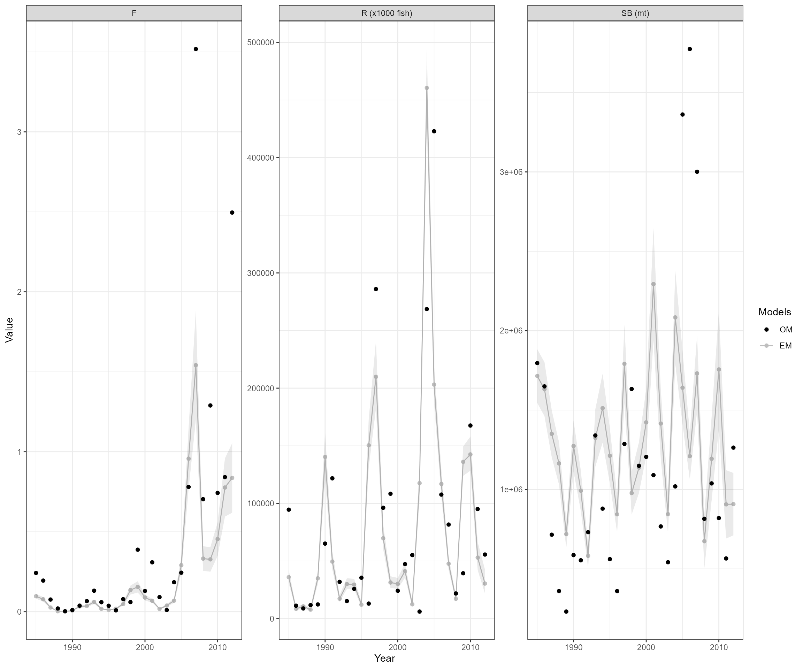
Projection

 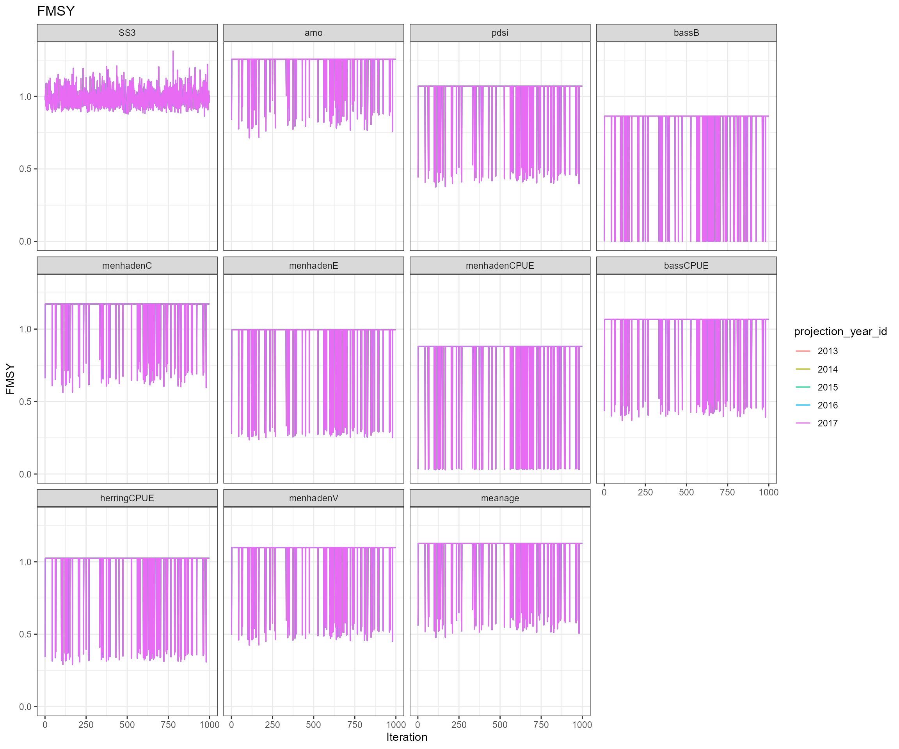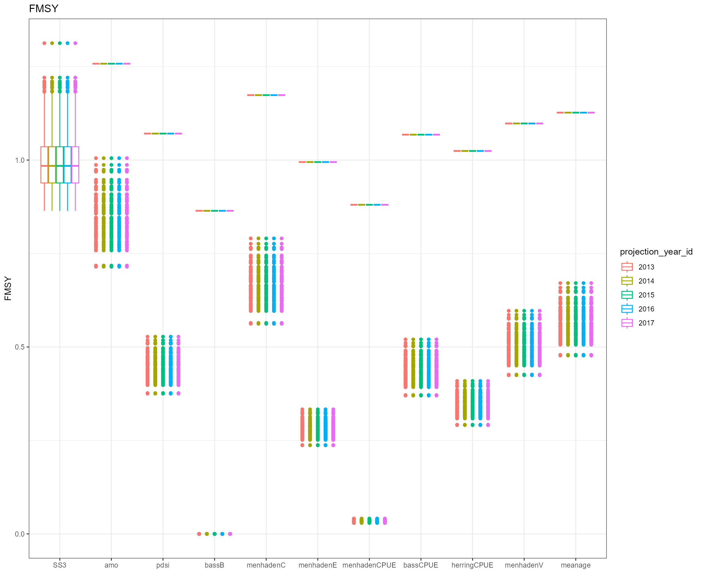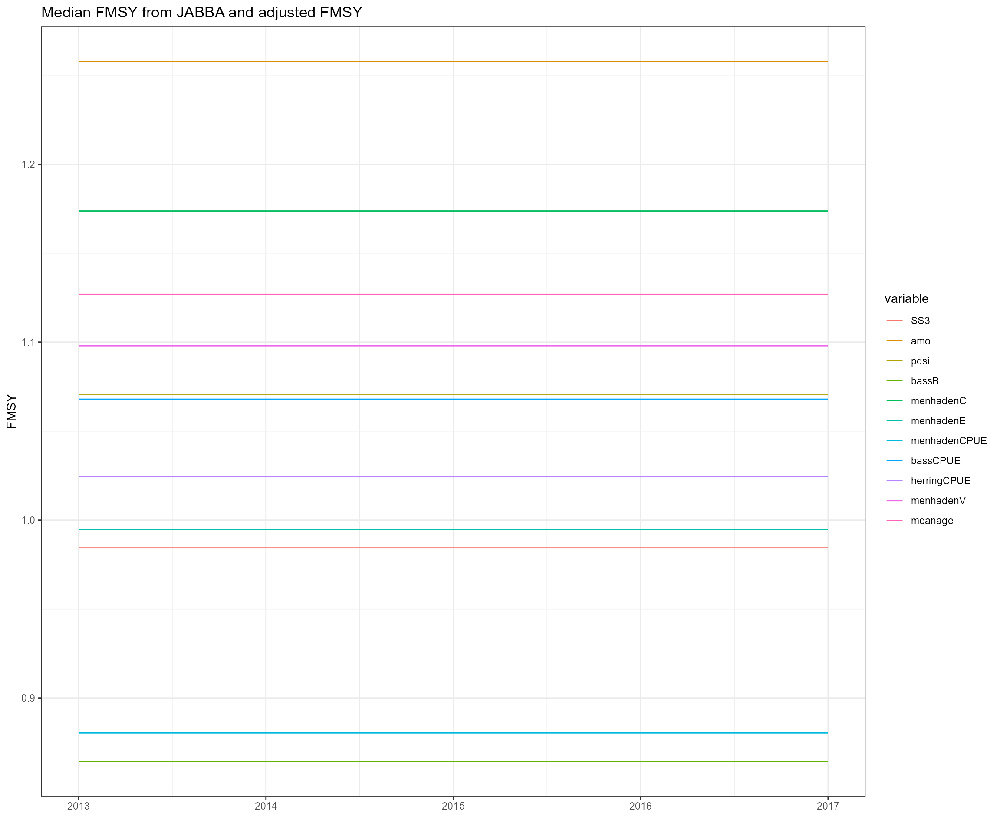
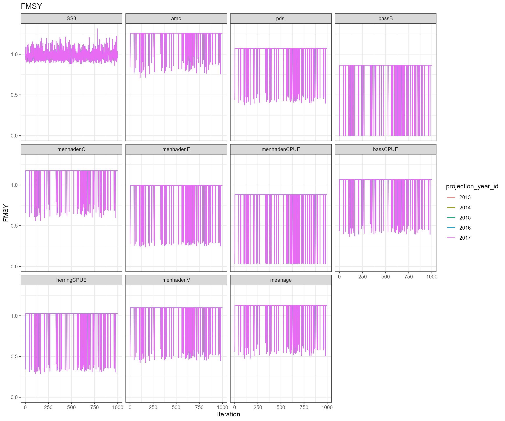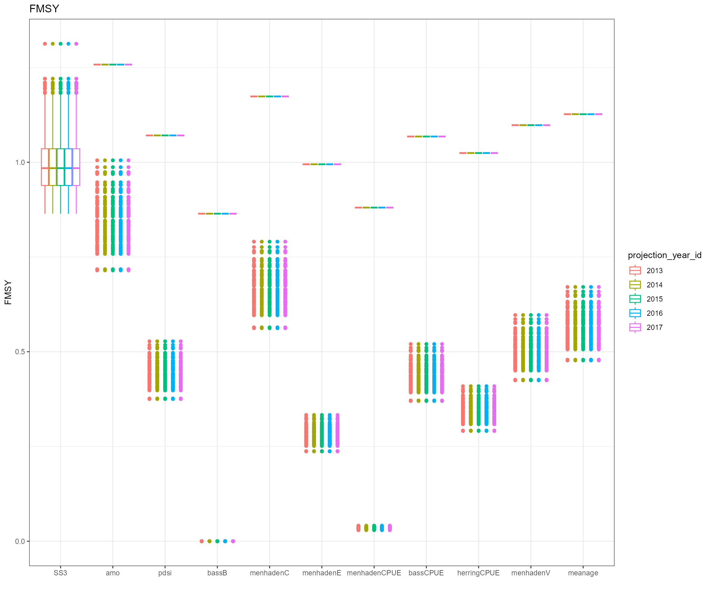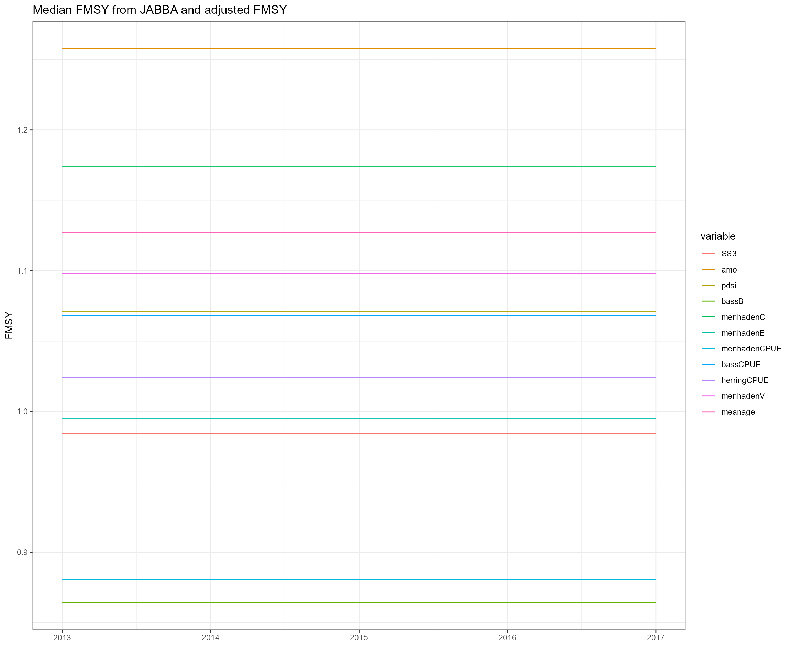
| case | projection_year | amo | pdsi | bassB | menhadenC | menhadenE | menhadenCPUE | bassCPUE | herringCPUE | menhadenV | meanage |
|---|---|---|---|---|---|---|---|---|---|---|---|
| PDSI+AMO1 Case | 1 | 0.36~lm | 0.1~lm | -1.3820535816324e-06~lm | -4.29981748370843e-08~lm | -0.03~lm | 4.54829924382422e-07*~lm | -0.000084661230618836~lm | -6.23995132126705e-06~lm | -2.31383160621146e-10~lm | 0.01~lm |
| PDSI+AMO1 Case | 2 | 0.36~lm | 0.1~lm | -1.3820535816324e-06~lm | -4.29981748370843e-08~lm | -0.03~lm | 4.54829924382422e-07*~lm | -0.000084661230618836~lm | -6.23995132126705e-06~lm | -2.31383160621146e-10~lm | 0.01~lm |
| PDSI+AMO1 Case | 3 | 0.36~lm | 0.1~lm | -1.3820535816324e-06~lm | -4.29981748370843e-08~lm | -0.03~lm | 4.54829924382422e-07*~lm | -0.000084661230618836~lm | -6.23995132126705e-06~lm | -2.31383160621146e-10~lm | 0.01~lm |
| PDSI+AMO1 Case | 4 | 0.36~lm | 0.1~lm | -1.3820535816324e-06~lm | -4.29981748370843e-08~lm | -0.03~lm | 4.54829924382422e-07*~lm | -0.000084661230618836~lm | -6.23995132126705e-06~lm | -2.31383160621146e-10~lm | 0.01~lm |
| PDSI+AMO1 Case | 5 | 0.36~lm | 0.1~lm | -1.3820535816324e-06~lm | -4.29981748370843e-08~lm | -0.03~lm | 4.54829924382422e-07*~lm | -0.000084661230618836~lm | -6.23995132126705e-06~lm | -2.31383160621146e-10~lm | 0.01~lm |
-
Projections based on \(F_{MSY}\)
- Projections from estimation model


- Projections from estimation model
pdf 2
-
Projections from operating model


Average_Catch B_K B_BMSY Average_BiomassMax 583680 0.3572 2.27e+05 3487086 Min 0 0.0000 0.00e+00 0 OM+OM FMSY 246913 0.1326 2.27e+05 643330 OM+DBSRA FMSY 265789 0.1048 1.79e+05 577650 OM+AMO Fadj 291984 0.0738 1.26e+05 499475 OM+PDSI Fadj 276067 0.0934 1.60e+05 549732 OM+Bass Biomass Fadj 251315 0.1196 2.04e+05 612948 OM+Menhaden Mean Age 281417 0.0871 1.49e+05 533977 OM+Menhaden Catch Fadj 285486 0.0822 1.40e+05 521291 OM+Menhaden Effort Fadj 267932 0.1025 1.75e+05 572056 OM+Menhaden CPUE Fadj 253562 0.1174 2.01e+05 607718 OM+Bass CPUE Fadj 275782 0.0937 1.60e+05 550543 OM+Herring CPUE Fadj 271237 0.0988 1.69e+05 563203 OM+Menhaden Value Fadj 246913 0.1326 2.27e+05 643330 SS3 EM+SS3 FMSY 530767 0.3402 5.04e-01 3398880 SS3 EM+AMO Fadj 583680 0.2949 3.43e-01 3166572 SS3 EM+PDSI Fadj 553962 0.3225 4.34e-01 3307962 SS3 EM+Bass Biomass Fadj 505129 0.3572 5.80e-01 3487086 SS3 EM+Menhaden Mean Age Fadj 534955 0.3372 4.91e-01 3383368 SS3 EM+Menhaden Catch Fadj 534955 0.3372 4.91e-01 3383368 SS3 EM+Menhaden Effort Fadj 510137 0.3540 5.65e-01 3470664 SS3 EM+Menhaden CPUE Fadj 553962 0.3225 4.34e-01 3307962 SS3 EM+Bass CPUE Fadj 534955 0.3372 4.91e-01 3383368 SS3 EM+Herring CPUE Fadj 553962 0.3225 4.34e-01 3307962 SS3 EM+Menhaden Value Fadj 553962 0.3225 4.34e-01 3307962 Bonanza_Period Collapse_Period Max 5 0 Min 0 5 OM+OM FMSY 0 1 OM+DBSRA FMSY 0 1 OM+AMO Fadj 0 3 OM+PDSI Fadj 0 2 OM+Bass Biomass Fadj 0 1 OM+Menhaden Mean Age 0 2 OM+Menhaden Catch Fadj 0 2 OM+Menhaden Effort Fadj 0 1 OM+Menhaden CPUE Fadj 0 1 OM+Bass CPUE Fadj 0 2 OM+Herring CPUE Fadj 0 1 OM+Menhaden Value Fadj 0 1 SS3 EM+SS3 FMSY 1 0 SS3 EM+AMO Fadj 1 0 SS3 EM+PDSI Fadj 1 0 SS3 EM+Bass Biomass Fadj 1 0 SS3 EM+Menhaden Mean Age Fadj 1 0 SS3 EM+Menhaden Catch Fadj 1 0 SS3 EM+Menhaden Effort Fadj 1 0 SS3 EM+Menhaden CPUE Fadj 1 0 SS3 EM+Bass CPUE Fadj 1 0 SS3 EM+Herring CPUE Fadj 1 0 SS3 EM+Menhaden Value Fadj 1 0 pdf